History of Myanamar Thingyan Festival
The history of the Thingyan water festival in Myanmar dating back from a very long time ago originated from the Buddhist version of a Hindu myth. Thingyan, in Sanskrit language (the language of ancient India), means “transit of the Sun from Pisces to Aries. The legend said that the Thingyan festival is an event to henceforth to signify the changing hands of the Brahma’s head – a powerful deity that lost his head in a gamble with Devas.
Nowadays, the Thingyan water festival in Myanmar is renowned as the most cherished event for people to wish for good health and luck to all people who attend.
Burmese Thingyan Gallery
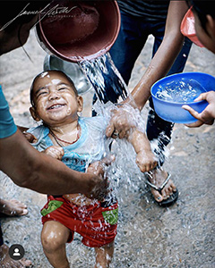
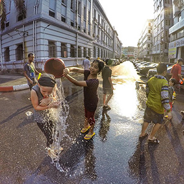
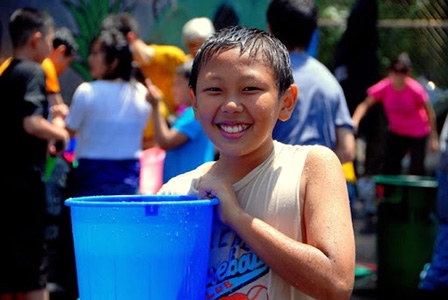
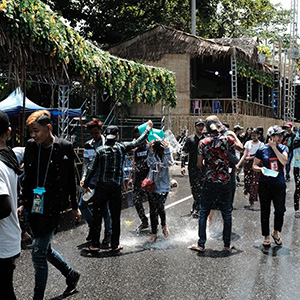
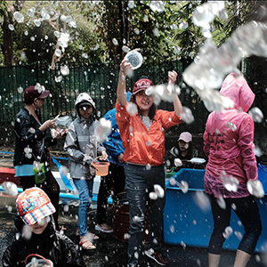
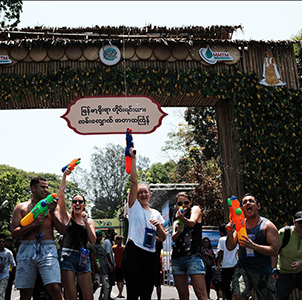
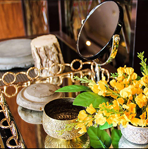

Burmese Thingyan Food
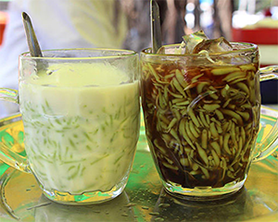
Mont-Lat-Saung
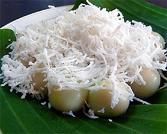
Mote-Lone-Yay-Paw
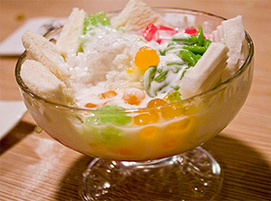
Shwe-yin-aye
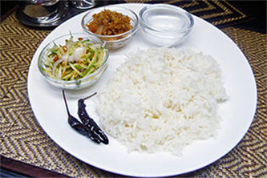
Thingyan-hta-min